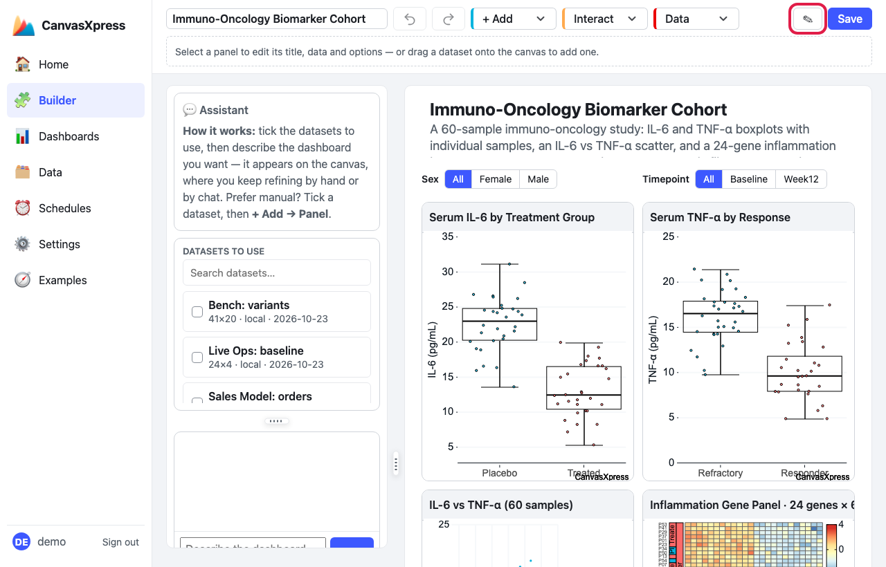
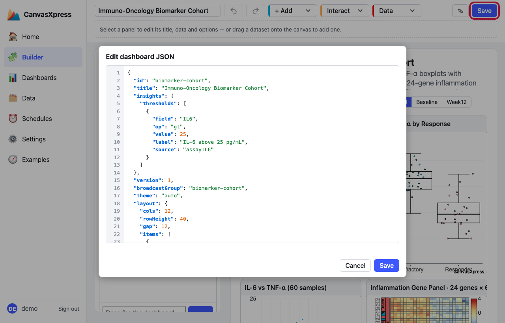
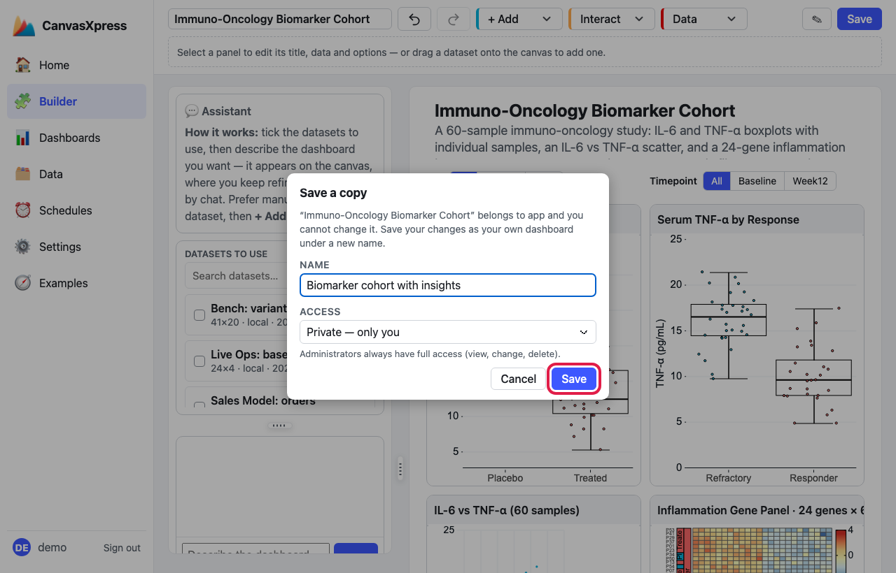

How to add insights to a dashboard
Insights are a strip of plain-language findings above a dashboard: a group that differs, values far from the rest, records that fail a limit you set. Every finding comes from a fixed check computed from the numbers, and carries the figures behind it. No language model is involved, nothing needs an API key or credits, and the same data always gives the same insights. This page adds them to a real dashboard, step by step.
The three checks
| Check | What it flags | How |
|---|---|---|
| Threshold | Records that fail a limit you declare | field op value on a numeric column. Never inferred: if you don't write a limit down, nothing is flagged. |
| Group difference | A measure that differs between the groups of a category | Kruskal–Wallis rank test for every measure × category, corrected for all the tests run (Benjamini–Hochberg). Only clear, large differences are shown. |
| Outliers | Values outside Tukey's fences | Below Q1 − 1.5·IQR or above Q3 + 1.5·IQR (“far out” beyond 3·IQR). |
A measure with only two distinct values (a 0/1 event), a constant, or a category with more than six levels (an identifier, not a grouping) is not tested.
1Open the dashboard in the Builder
Go to Dashboards in the left menu, find your dashboard with the search box, and click Open in Builder.

Dashboards → search → Open in Builder (outlined).
2Open the JSON editor
There is no button for insights yet: they are one block in the dashboard's JSON. Click the pencil next to Save (Edit dashboard JSON).

The pencil (outlined) opens Edit dashboard JSON.
3Add an insights block
Add the block at the top level of the JSON (anywhere is fine; near the top is easy to find). This one turns on the data-derived checks and declares a limit: IL-6 above 25.
"insights": {
"thresholds": [
{ "field": "IL6", "op": "gt", "value": 25,
"label": "IL-6 above 25 pg/mL", "source": "assayIL6" }
]
}

The block sits at line 4; Save (outlined) applies it.
The simplest version is "insights": {}, which turns on the group-difference and outlier checks
with no limits.
| Key | Meaning |
|---|---|
thresholds[].field, op, value |
The failing condition: lt below, le at or below, gt above, ge at or above. |
thresholds[].label | Text shown before the caption. |
thresholds[].source | Limit the check to one data source (default: any source that has the field). |
sources | Which data sources to check (default: every source that is not a narrowed copy). |
max | The most insights to show (default 6). |
4Save it
Click Save in the JSON dialog. For a locked example the Builder then asks you to Save a copy: give it a name and click Save.

Name the copy and click Save (outlined).
5Preview it
On the Dashboards page find your dashboard and click Preview. It opens full page in a new tab.
Preview (outlined) on the saved copy.
6Read the strip
The Insights strip sits above the dashboard. Your threshold comes first (the red dot), then the group differences and outliers, up to the six most notable; the strip says how many more were left out.

The threshold finding first, then group differences. The header says how many comparisons were run.
Click Figures under any caption to see every number it used: the counts, the fences, each group's n and median, the raw and the adjusted p-value.

Figures for the threshold: the limit, how many of how many records failed, and each failing record's value.
Make the records clickable
When a dashboard has a case card (a one-row table that shows one patient or sample), the records an insight names appear as buttons, such as P014. Clicking one loads that record into the card and scrolls to it. The dashboards built from one table already have a case card (see How to build a dashboard from one table), and Cohort Tour shows it working. The Biomarker dashboard above has no case card, so its strip shows no buttons.
Where insights show, and who sees what
- They show on the Preview page and on shared links. They do not show in the Builder or in the View pane of the Dashboards page.
- The checks run on the server over the rows the viewer is allowed to see. Row- and column-level security applies as it does for the dashboard itself, so nobody sees an insight computed from data they cannot see.
- To remove insights, delete the
"insights"block in the JSON editor and save.
Tips
- Declare limits for the things that matter to you (a failed quality score, a lab value out of range); the statistical checks find the surprises you did not think to look for.
- Use
sourcesto keep the checks to the main table, andmaxto keep the strip short. - Every caption can be checked: Figures shows the numbers, and the statistics are tested against R in the server's test suite.
The full reference is docs/insights.md in the repository.